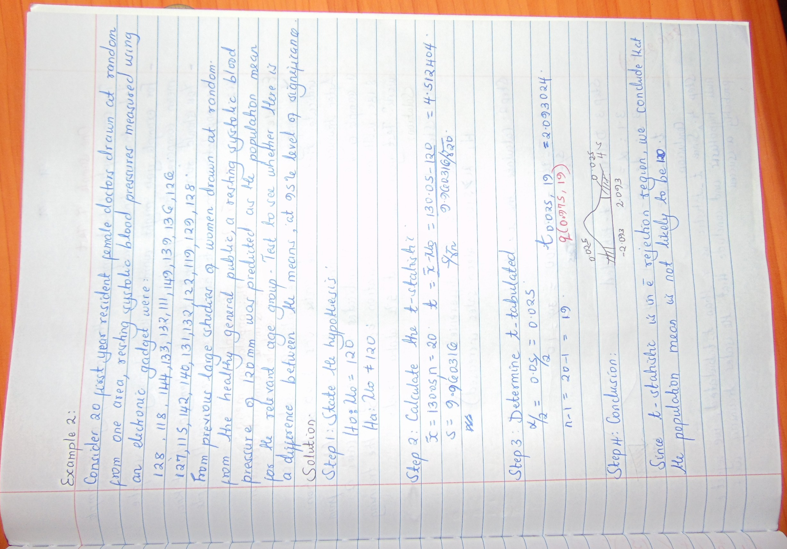
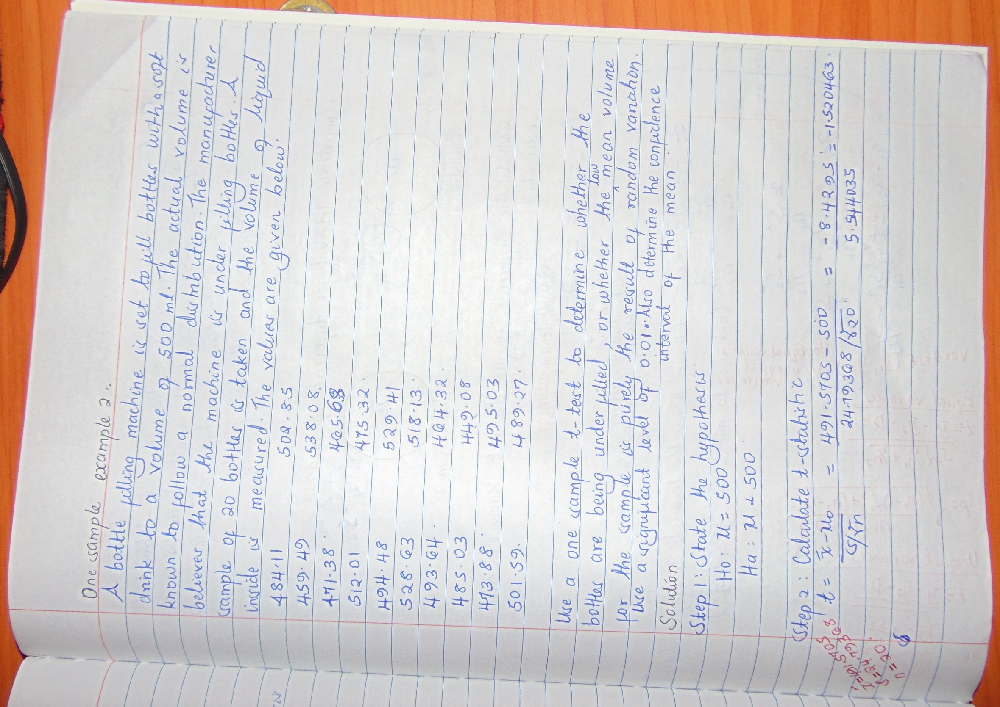

Consider 20 first year resident female doctors drawn at random from one area, resting systolic blood pressures measured using an electronic gadget were:
128, 118, 144, 133, 132, 111, 149, 139,136,126, 127,115,142, 140, 131,132,122,119,129,128.
From previous large studies of women drawn at random from the healthy general public, a resting systolic blood pressure of 120mm was predicted as the population mean, for the relevant age group. Test to see whether there is a difference between the means at 95% level of significance.
knitr::include_graphics("img/DSC06212_2.jpg")
## load the library required to intergrate R and Python
library(reticulate)
## Load the python libraries
from scipy.stats import ttest_1samp #used for carrying out one sample t-tests## Generate a vector of values
vals <- c(128, 118, 144, 133, 132, 111, 149, 139,136,126, 127,115,142, 140, 131,132,122,119,129,128)
## Carry out the t-test to determine whether the population mean is significantly different from 120
t.test(vals, mu=120,alternative = "two.sided")
One Sample t-test
data: vals
t = 4.5124, df = 19, p-value = 0.0002384
alternative hypothesis: true mean is not equal to 120
95 percent confidence interval:
125.3884 134.7116
sample estimates:
mean of x
130.05
## Generate a vector of values
vals_py = [128, 118, 144, 133, 132, 111, 149, 139,136,126, 127,115,142, 140, 131,132,122,119,129,128]
## Carry out the t-test to determine whether the population mean is significantly different from 120
ttest_1samp(vals_py, 120)
Ttest_1sampResult(statistic=4.512403659336718, pvalue=0.00023838063630967753)knitr::include_graphics("img/DSC06213.JPG")
knitr::include_graphics("img/DSC06214.JPG")
## Generate a vector of values
volume <- c(484.11,459.49,471.38,512.01,494.48,528.63,493.64,485.03,473.88,
501.59,502.85,538.08,465.68,495.03,475.32,529.41,518.13,464.32,449.08,489.27)
## Carry out the t-test
t.test(volume, alternative = "less", mu=500,conf.level = 0.99)
One Sample t-test
data: volume
t = -1.5205, df = 19, p-value = 0.07243
alternative hypothesis: true mean is less than 500
99 percent confidence interval:
-Inf 505.6495
sample estimates:
mean of x
491.5705 ## Generate a vector of values
volume = [484.11,459.49,471.38,512.01,494.48,528.63,493.64,485.03,473.88,
501.59,502.85,538.08,465.68,495.03,475.32,529.41,518.13,464.32,449.08,489.27]
## Carry out the t-test
ttest_1samp(volume, 500)
##Notes:
## The p-value obtained is that of a two tailed test, so we divide it by 2 to get the p-value of a one tailed test (0.14486225283259022/2 = 0.07243113)Ttest_1sampResult(statistic=-1.5204626102079255, pvalue=0.14486225283259022)